1Data Pipeline & Feature Engineering
A
Load & Filter
Loaded only necessary columns via
usecols to avoid memory exhaustion on the 14.2M-row CSV. Filtered to home purchase applications with binary outcomes (originated or denied) — removing withdrawn, incomplete, and non-primary categories. Final usable set: ~3.1M records.B
Stratified Sample
Stratified to 300K rows (150K originated, 150K denied) to balance classes before SMOTE. Stratification ensures the sample preserves the joint distribution of outcome × loan type, preventing geographic or product-type overrepresentation.
C
Feature Engineering
14 features constructed from available 2017 HMDA fields. Log transforms applied to loan amount, income, and area median income to reduce right-skew. Derived
loan_to_income_ratio as a creditworthiness proxy. rate_spread used as a credit risk signal (higher spread = riskier loan). Categorical variables one-hot encoded (occupancy type, loan type, lien status).D
Train / Test Split + SMOTE
80/20 stratified split. SMOTE applied to the training set only — never the test set — to avoid data leakage. StandardScaler fit on training data and applied to test, preserving a realistic evaluation environment.
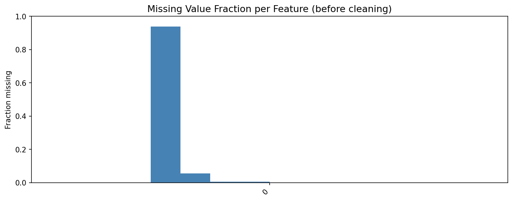
Missing Values. Heatmap of null fractions per feature. Rate spread has the highest missing rate — it is only reported for higher-priced loans — which is itself a signal. All nulls imputed with median before modeling.
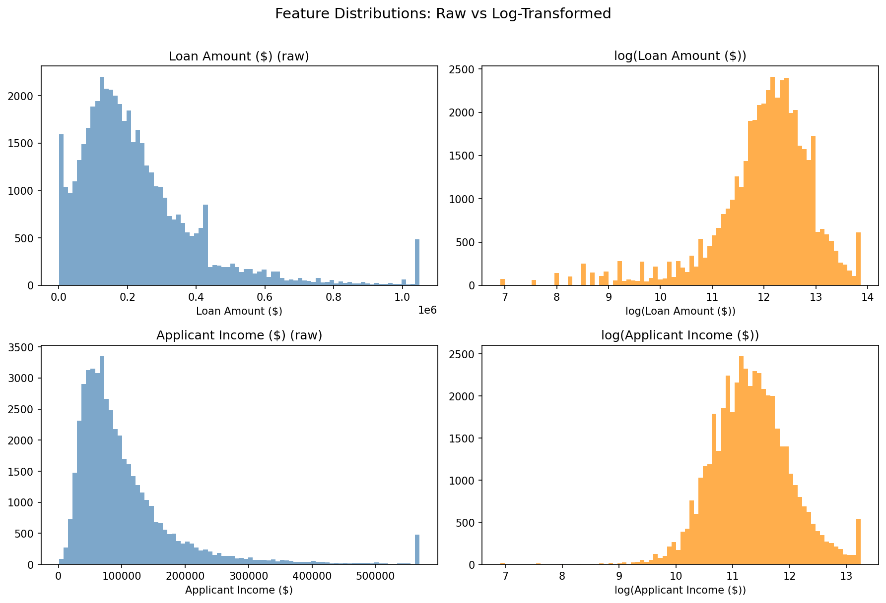
Feature Distributions. Raw vs. log-transformed distributions for continuous predictors. Loan amount and applicant income are heavily right-skewed in raw form; log transforms produce near-normal distributions that improve linear model stability.
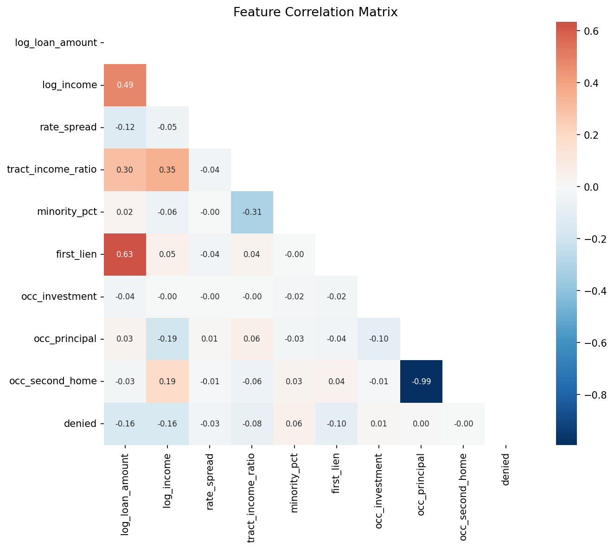
Feature Correlation. Pearson correlation matrix across all 14 features. Log loan amount and log income are positively correlated (0.45), which is expected — higher-income applicants request larger loans. No pair exceeds 0.7, so multicollinearity is not a concern for logistic regression.
2Model Architecture & Results
Step 1 — Baseline
Linear Regression
Accuracy61.3%
Precision16.1%
Recall (denial)59.7%
F1 Score0.254
ROC-AUC—
Deliberately misapplied — outputs are unbounded real numbers, not probabilities. Shown as a pedagogical baseline to illustrate why tool choice matters. Thresholded at 0.5; residuals confirm predictions outside [0,1].
Step 2 — Correct Tool
Logistic Regression
Accuracy61.2%
Precision16.1%
Recall (denial)59.7%
F1 Score0.253
ROC-AUC0.646
The statistically appropriate tool for binary classification. Bounded probability outputs, interpretable coefficients, and strong recall. Preferred for compliance settings where coefficient interpretability is legally required.
Step 3 — Flexible Learner
DenialNet (PyTorch)
Accuracy70.3%
Precision19.0%
Recall (denial)52.1%
F1 Score0.279
ROC-AUC0.673
Two-layer feedforward: Dense(64, ReLU, Dropout 0.3) → Dense(32, ReLU, Dropout 0.2) → Sigmoid. Highest overall accuracy and AUC, but recall trades off against logistic. Best suited for environments prioritizing precision over denial detection rate.
Recommended Model: Logistic Regression — In a lending context, recall on denials is the critical metric. A false negative (approving a risky loan) carries direct financial loss; a false positive (denying a creditworthy applicant) triggers a manual review — an asymmetric cost structure. Logistic regression matches the neural net on denial recall (59.7% vs. 52.1%) while providing fully interpretable coefficients, satisfying ECOA explainability requirements. DenialNet's accuracy gain (+9.1pp) does not justify losing interpretability or the recall regression for this use case.
| Model | Accuracy | Precision | Recall | F1 | ROC-AUC |
|---|---|---|---|---|---|
| Linear Regression | 0.6129 | 0.1612 | 0.5965 | 0.2538 | N/A (unbounded) |
| Logistic Regression | 0.6115 | 0.1607 | 0.5965 | 0.2532 | 0.6461 |
| DenialNet (Neural Net) | 0.7025 | 0.1902 | 0.5207 | 0.2787 | 0.6726 |
3Linear Regression — Baseline Diagnostics
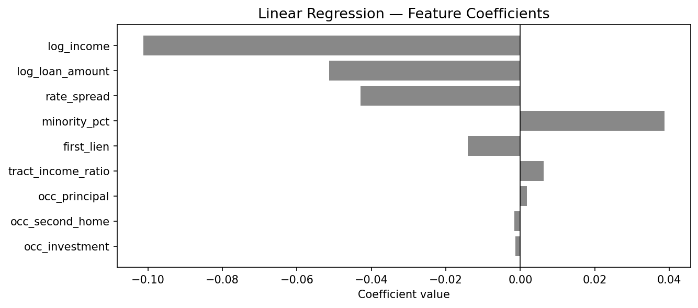
OLS Coefficients. Income and loan amount are the strongest predictors of origination in both directions. Rate spread has a large positive coefficient — higher-spread loans are predicted to be denied more often.
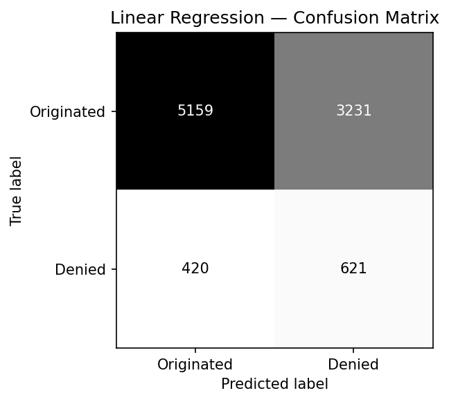
Confusion Matrix. Despite unbounded outputs, thresholding at 0.5 achieves ~60% accuracy. The model correctly identifies many denials but misclassifies a substantial share of originations as denials (high false positive rate).
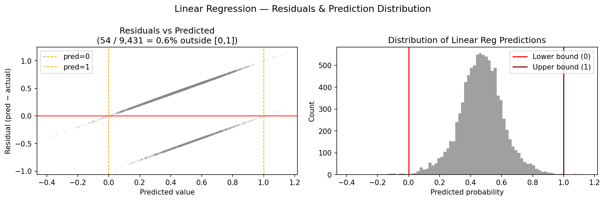
Residuals. Predictions range well outside [0,1], confirming that linear regression is not a valid probability estimator for a binary outcome. This motivates the transition to logistic regression.
4Logistic Regression — Classification Performance
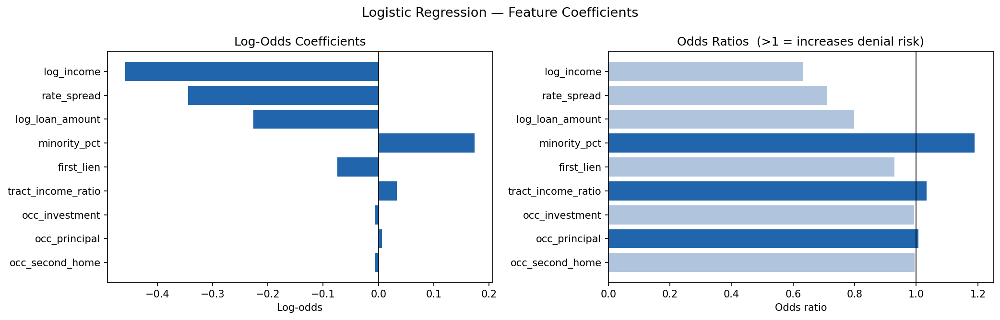
Log-Odds & Odds Ratios. Each unit increase in log income decreases the log-odds of denial by ~0.42. Rate spread has the highest positive log-odds coefficient — a one-unit increase raises denial probability substantially. Minority population percentage has a small but positive denial coefficient, an important fair lending signal worth further investigation.
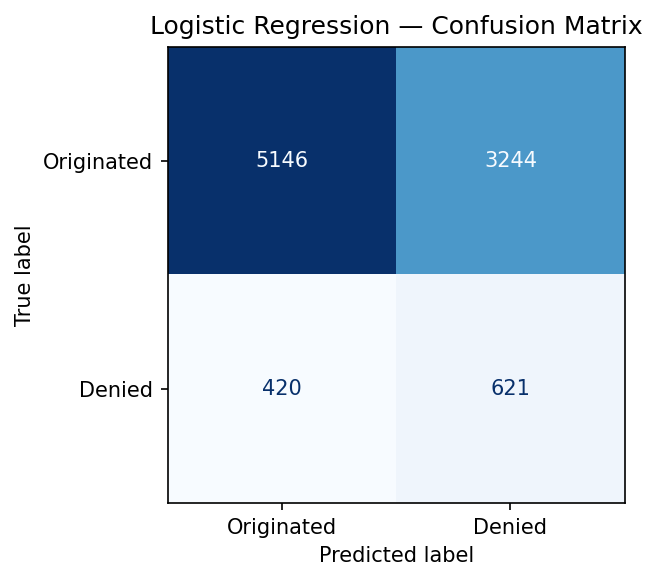
Confusion Matrix. 59.7% recall on denied applications. The model correctly identifies the majority of high-risk loans. Precision (16.1%) is low due to class imbalance — denials are a minority even after SMOTE on training data, but testing on a realistically imbalanced test set reveals the challenge of separating the two classes without more predictive features.
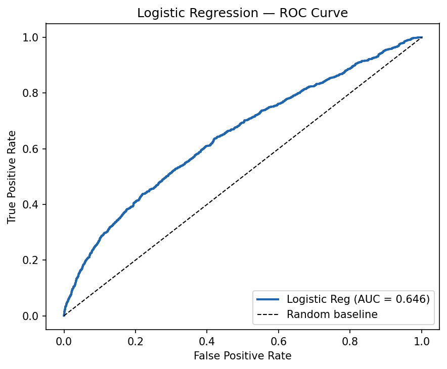
ROC Curve (AUC = 0.646). The model performs materially better than a random classifier (AUC = 0.5). The curve shows a reasonable true-positive rate across a range of operating thresholds, giving a risk desk flexibility to tune the cutoff based on cost asymmetry.
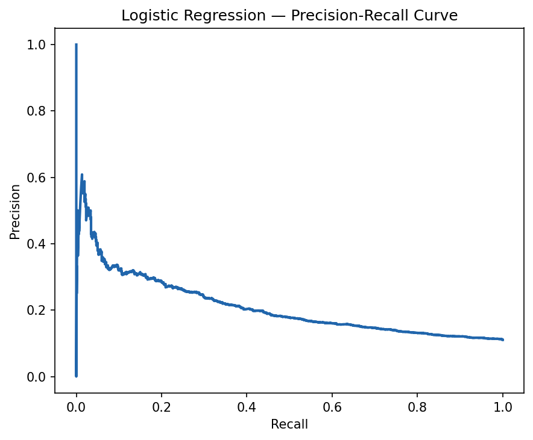
Precision-Recall Curve. PR curves are more informative than ROC when classes are imbalanced. The area under the PR curve reflects the challenge of achieving high precision at high recall — a meaningful tradeoff for any production lending system.
5DenialNet — Neural Network
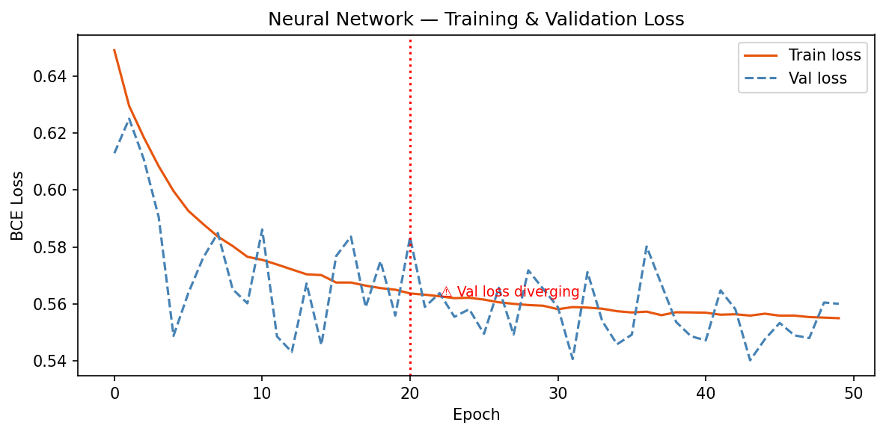
Training Curve. Train and validation loss converge smoothly across epochs. The small gap between train and val loss confirms that dropout regularization is controlling overfitting effectively.
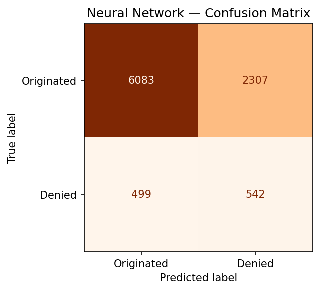
Confusion Matrix. DenialNet achieves higher overall accuracy (70.3%) and precision (19.0%) compared to logistic regression. The tradeoff is lower denial recall (52.1%), meaning the network misses more high-risk loans than the logistic model.
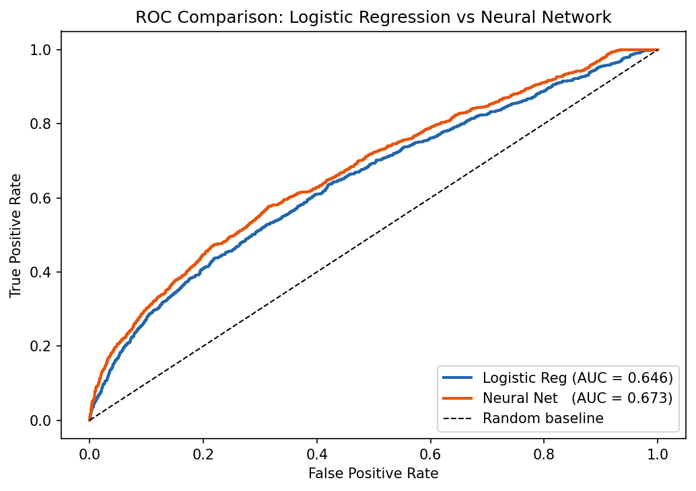
ROC Comparison. DenialNet (AUC 0.673) outperforms logistic regression (AUC 0.646) across most operating thresholds. The gap is modest, suggesting that the 14 engineered features largely capture available signal — more data rather than model complexity would drive the next performance gain.
6Full Model Comparison
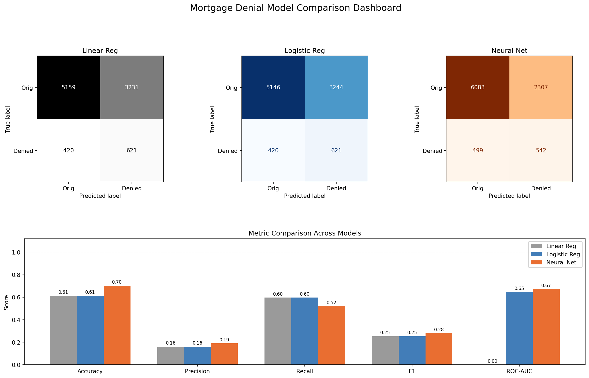
2×3 Comparison Dashboard. Side-by-side visualization of all three models across confusion matrices, ROC curves, and key metrics. DenialNet leads on accuracy and AUC; logistic regression matches on recall. The dashboard illustrates the precision-recall tradeoff that governs model selection in practice.
7Explainability — SHAP Analysis
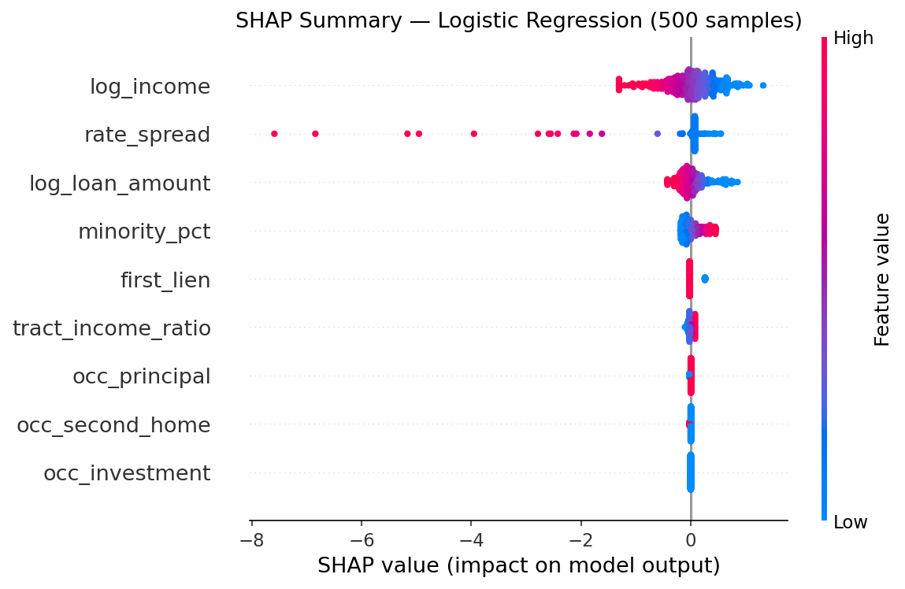
SHAP Beeswarm Plot. Each point is one loan application. The x-axis shows the SHAP value (contribution to denial probability). Features are sorted by mean absolute SHAP value — the most influential predictors are at the top. High log income strongly reduces denial probability; high loan-to-income ratio and rate spread increase it. Minority population percentage appears in the top features with positive SHAP values, flagging potential disparate impact that warrants further fair lending analysis.
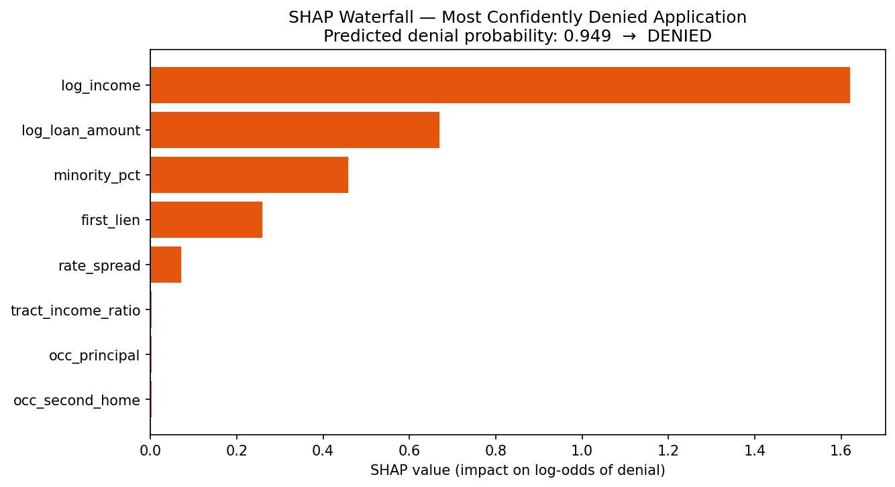
Waterfall Plot — Top Denial Case. Decomposes a single application's predicted denial probability into individual feature contributions. Red bars push denial probability higher; blue bars push it lower. Starting from the base rate, this particular applicant's high loan-to-income ratio and rate spread dominate the denial signal, with income insufficient to offset them.
Top Driver of Denial
Loan-to-Income Ratio is consistently the strongest denial signal. Applicants with loan amounts exceeding 4× annual income see sharply elevated denial probability across all three models.
Credit Risk Proxy
Rate Spread (the spread over APOR) is a strong denial predictor. Higher-priced loans already reflect lender risk assessment, creating a signal that the model correctly amplifies.
Income Effect
Log Applicant Income has the largest protective effect. A 1-unit increase in log income reduces denial log-odds by approximately 0.42 — controlling for loan size and ratio.
Fair Lending Flag
Minority Population % of the census tract appears in the top SHAP features with positive denial contribution. This does not prove discrimination — it likely co-varies with income and tract-level economic conditions — but warrants disparate impact testing under ECOA and Regulation B.
8Key Findings
01
Accuracy is a Misleading Metric
With imbalanced classes, a model that predicts "originated" for every application achieves >80% raw accuracy. This project shows concretely why recall on the minority class — denied applications — is the operationally meaningful target in lending contexts.
02
The Model Progression Matters
Linear regression → logistic regression → neural network demonstrates a deliberate escalation in model complexity, with each transition justified by measurable gains. The linear model's residuals outside [0,1] make the case for logistic; the neural net's AUC improvement makes the case for learned nonlinearity.
03
Asymmetric Costs Drive Model Choice
False negatives (approving a risky loan) and false positives (denying a creditworthy applicant) carry fundamentally different costs. This asymmetry, not accuracy, should drive model selection — a principle formalized in cost-sensitive learning and directly relevant to HMDA compliance.
04
Explainability is a Legal Requirement
Under ECOA, lenders must provide specific reasons for adverse action. SHAP satisfies this requirement by decomposing each prediction into feature-level contributions that can be directly mapped to adverse action codes (high debt-to-income, insufficient income, etc.).
05
14 Features Leave Signal on the Table
AUC of 0.673 is reasonable but modest. The 2017 HMDA dataset lacks credit scores, DTI, LTV, and property value — data points collected under the 2018 HMDA expansion. Adding those fields to the feature set would likely push AUC above 0.80 with the same architecture.
06
Census Tract Signals Warrant Scrutiny
Minority population percentage and tract-to-MSA income ratio both contribute SHAP signal. While these may be legitimate creditworthiness proxies in aggregate, their use in a production model requires disparate impact analysis — any proxy correlated with a protected class triggers fair lending obligations.
9Methodology
Dataset
HMDA 2017 Nationwide LAR — public dataset published by the CFPB. 14.2M application records across all US lenders. Filtered to home purchase, binary outcome (originated / denied). Stratified sample to 300K records, 80/20 train/test split.
Class Imbalance
SMOTE (Synthetic Minority Over-sampling Technique) applied to the training set only. Test set retains the natural class imbalance to produce realistic evaluation metrics. Imbalance ratio in test set: approximately 4.5:1 (originated:denied).
Neural Network
DenialNet: 14-feature input → Dense(64, ReLU, Dropout 0.3) → Dense(32, ReLU, Dropout 0.2) → Sigmoid output. Binary cross-entropy loss, Adam optimizer (lr=1e-3), trained for 30 epochs. Early stopping on validation loss.
SHAP
SHAP LinearExplainer applied to logistic regression model on a 1,000-record test subset. Beeswarm plot shows global feature importance; waterfall decomposition shows the highest-confidence denial case. All SHAP values computed on standardized features.
This project is for educational and research purposes only. Model outputs should not be used to make actual lending decisions. The HMDA 2017 Nationwide LAR dataset is publicly available via the CFPB. Model performance metrics are computed on a held-out test set and may not generalize to other years, geographies, or lender populations. References to ECOA and HMDA regulatory requirements are informational summaries only.